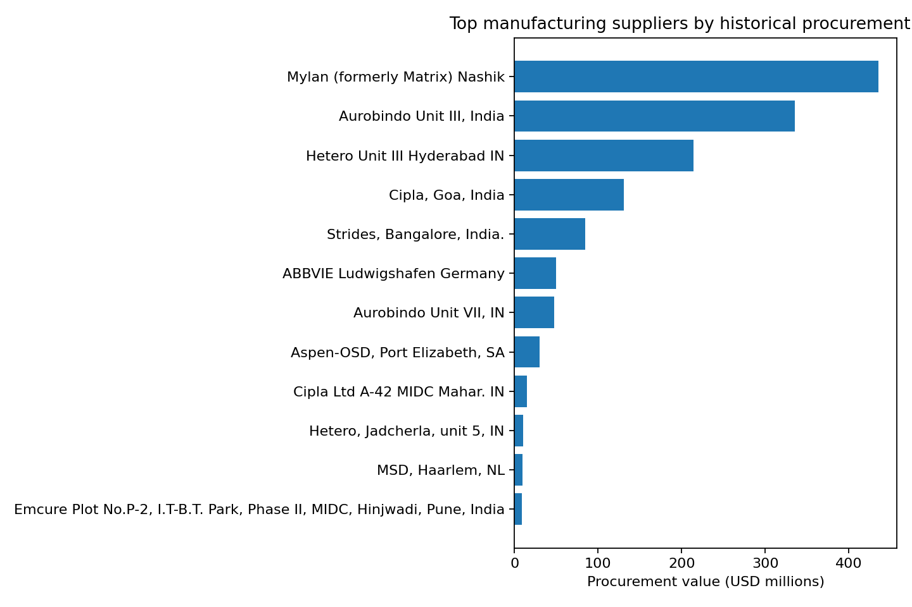

Pharmaceutical Procurement Intelligence
A compact decision-support prototype using historical public global-health procurement data to identify product-market combinations that deserve deeper pricing and supplier review.
Highest review-priority signals
| Market | Medicine | Transactions | Suppliers | Price dispersion (%) | Top supplier share (%) | Review score |
|---|---|---|---|---|---|---|
| South Africa | zidovudine | 93 | 4 | 107.4 | 97.0 | 84.6 |
| South Africa | efavirenz | 144 | 5 | 101.0 | 77.7 | 81.9 |
| South Africa | abacavir | 56 | 2 | 76.3 | 98.9 | 81.7 |
| Tanzania | efavirenz/emtricitabine/tenofovir disoproxil fumarate | 38 | 5 | 47.7 | 79.1 | 79.7 |
| South Africa | lamivudine | 112 | 5 | 94.9 | 69.4 | 78.8 |
| South Africa | lopinavir/ritonavir | 27 | 1 | 39.7 | 100.0 | 78.7 |
| Zimbabwe | lamivudine/nevirapine/stavudine | 57 | 2 | 33.1 | 82.8 | 77.6 |
| Zambia | emtricitabine/tenofovir disoproxil fumarate | 30 | 3 | 30.9 | 81.7 | 77.1 |
| South Africa | tenofovir disoproxil fumarate | 129 | 6 | 177.9 | 51.2 | 76.9 |
| Vietnam | lopinavir/ritonavir | 58 | 2 | 26.0 | 98.0 | 76.5 |
| Zambia | lamivudine/tenofovir disoproxil fumarate | 17 | 6 | 115.5 | 69.9 | 75.9 |
| South Africa | nevirapine | 33 | 3 | 361.6 | 98.0 | 75.1 |
The score combines historical procurement value, within-product price dispersion and supplier concentration. It is a screening signal, not a claim that a transaction is inefficient.
Market footprint

Supplier footprint

Review-priority ranking

What this could become
An automated intelligence workflow can ingest tender and procurement feeds, standardize medicine/formulation identifiers, benchmark new purchases against historical ranges, detect supplier-concentration shifts, and surface review alerts to commercial or procurement teams.
Important context
This first build is historical and should not be read as a representation of current market prices. Procurement terms, freight, contract structure, quality requirements and geography can legitimately explain price variation. The project is designed to demonstrate a transparent analytical workflow rather than assert procurement wrongdoing.